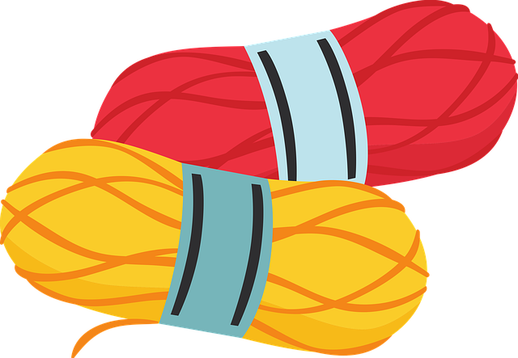

Create
Take a look at all the patterns we have in our catalogue. Download, print and favorite!
Find a wide range of tutorials, from beginner to advanced techniques and tips
Head to our chat-room, where you can share ideas and finished projects

Compare and contrast different types of yarn, and find the best ones for your project